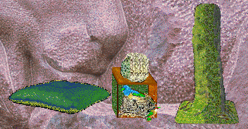

Secret Wood Carry-case and Mice

The Secret Wood / Sounds for Secret Wood

Secret Wood special toyz
(Sept 16th 2003 I Updated the Dungbeetle)
New Petz 3 Playscene items
Click picture or name to download.
This page contains any playscenes or special items to go with playscenes that I make for the Petz 3 game. Unless otherwise stated, they are for the English-language version; I do intend to make them for the International version also, and when I do they will be clearly labelled.
NOTE: if you are trying to use my carrycase patch but can't see any .dll files in your game's Resource directory, then they are "hidden" and you need to un-hide them. Open either "My Computer" or "Windows Explorer" and, from the "View" drop-down menu, choose "Options". Now in the View pane of the dialogue box that pops up, choose "show all files" and not "hide files of these types". Click "OK", then go to that directory and you'll see the .dll files just fine. Make a copy of any file that you intend to patch, as these are important files and you might want your original back again!
The Secret Wood is now finished and available complete for you to
download! It will look best if you download the special Carry-case with
mice, and the toyz -- and I strongly recommend that you download the sounds
also. Click on various things, such as the knot-hole by the lion's nose, for
some little surprises, and have fun with the birdie-house and Scarab
(dung-beetle). You can pick them up and move them around the place. The
beetle does a dung-beetle's job of clearing up dirt, and the birdie-house
keeps time for you. Oh, and there is a shelf in the bower above the
Lion.
I hope you enjoy this scene and find it as magical as I do. I shall be
putting together my notes and filmstrip bitmaps into a tutorial to help
other people make their own carry-case and playscene.